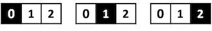
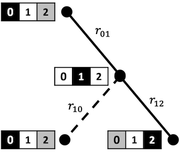

Hallway Environment Example
The graphenv library implements graph search as a reinforcement learning (RL) problem with parameteric action spaces, and is ready to use with many off-the-shelf algorithms available in the RLLib framework.
Before jumping into the implementation details, let’s take a look a simple motivating example: the hallway problem.
The hallway problem is effectively a 1d version of the gridworld problem in classic RL. We are given a hallway with \(N\) discrete positions and, starting at one end, want to learn to reach the opposite end in as few steps as possible.

The figure above shows a hallway problem with \(N=3\), and the optimal solution starting at state 0 and ending at state 2, with each “current state” highlighted in black.
This trivial problem can be used to express the “RL on a graph” idea succinctly, and enable solving much more interesting, non-trivial problems.
The hallway problem as graph problem
Before we jump into the graph formulation of the hallway problem, let’s talk first about actions, because this is one of the key differences between graphenv and traditional RL gym environments.
Typically, discrete actions spaces in gym environments have fixed dimension and fixed definitions. In the hallway problem, for instance, there are always two actions: “move left” (action=0) and “move right” (action=1). Cases where the action is infeasible, like trying to move left from the start position, are typically handled by implmenting a null transition where the action doesn’t change the current state.
In general graph search problems, however, such fixed action spaces are not practical. In the game of chess, for example, the total number of possible board states and, subsequently, moves, is astronomical, while the set of feasible moves changes continually throughout the game.
The key observation that makes graph search tractable as a gym environment is: even for large and complex graph search problems, the number of states that are accessible from the current state is usually relatively small. If, instead of fixing the action to a pre-defined set of choices, we think of each action as representing an accessible next state, this endeavor becomes tractable.
And so, we abandon the idea of “fixed” action spaces in favor of “parametric” action spaces. Here, parametric means that actions coincide with next states represented by feature vectors, rather than having a single, index-based interpretation. In other words, rather than actions as “move \([ left, right ]\)”, parametric actions can be thought of as “go to state \([i, j]\)” where the states \(i,j\) each have a vector representation. Also unliked fixed spaces, the order doesn’t matter: we could equivalently say “go to state \([j, i]\)”.
A key ingredient in making this machinery work is to have policy models that can work on parameteric action spaces
The figure below illustrates how to think of the simple hallway example as a graph problem.

Before jumping into the specifics of how all of this works in graphenv, let’s define some terms.
A vertex reprents a single state in the graph which, for this problem, can be described by an index \(i\in \{ 0, 1, 2 \}\). (Sometimes we’ll use the terms vertex, state, and node interchangeably). In the figure, each vertex is shown alongside the corresponding state of the hallway problem.
The root is the starting vertex of the graph search, here, \(i=0\).
At each state in the search, a certain number of child states (or children) are accessible. In the figure above, we illustrate this using the color codes:
black = current vertex
white = child vertex
gray = inaccessible vertex
If we think of an RL action as selecting one of these children, it’s clear that the number of actions can change from one state to the next. For example:
Starting at the root vertex \(i=0\) (black), state \(i=1\) (white) is accessible by moving right, while state \(i=2\) (gray) can’t be accessed in a single move.
Starting at vertex \(i=1\) (black), both \(i=0\) and \(i=2\) are accessible (white) – there are no masked states in this case.
The terminal vertex here coincides with \(i=2\). Notice that this vertex has no children because, when reached, the problem is solved.
The hallway problem as graphenv problem
The graphenv module makes it easy for a user to implement their graph search problem as a gym environment, and then to plug that environment into RLLib using both custom and off-the-shelf RL algorithm. At a high level, the user implements a Vertex and Model class to represent the graph state and correspnding RL policy model and graphenv takes care of the rest.
The figure below illustrates how the Vertex and Model classes interact, with data labeled on the left and associated methods labeled on the right.
Below, we step through the implementation of the HallwayState (inheriting from the graphenv Vertex) and HallwayModel (inheriting from the graphenv Model). We then provide a working example of building and running a hallway environment.
HallwayState
(See graphenv.examples.hallway.hallway_state for the full implementation).
The HallwayState represents all of the problem logic at the level of a single vertex that enables graphenv to automate the overarching search and RL training. This class inherits from graphenv.vertex.Vertex which has a number of required methods and attributes which we step through below.
__init__
As you’d expect, problem configuration happens here. The hallway state is completely specified by the current and end positions,
def __init__(
self,
corridor_length: int,
cur_pos: int = 0,
) -> None:
"""Initializes this HallwayState.
Args:
corridor_length (int): length of the vertex chain
cur_pos (int, optional): initial vertex index. Defaults to 0.
"""
super().__init__()
self.end_pos = corridor_length
self.cur_pos = cur_pos
observation_space
Returns a gym.spaces.Space object that describes the structure of the data used to represent a vertex. In the hallway problem,
@property
def observation_space(self) -> gym.spaces.Dict:
"""HallwayStates are observed with a dictionary containing a single
key, 'cur_pos', with an integer value between 0 and self.end_pos,
indicating the index of the vertex.
Returns:
gym.spaces.Dict: The observation space for HallwayStates.
"""
return gym.spaces.Dict(
{
"cur_pos": gym.spaces.Box(
low=np.array([0]), high=np.array([self.end_pos]), dtype=int
),
}
)
where cur_pos is the integer index of the current position. The box space has a single element containing the index of the current position but, in general, can contain multiple, complex subspaces.
_make_observation
To decide which child to transition to, the RL agent will need to call a policy model with that vertex’s observation. To this end, we implement _make_observation which, for the hallway example, returns:
def _make_observation(self) -> Dict[str, np.ndarray]:
"""Makes an observation of this HallwayState vertex.
Returns:
Dict[str, np.ndarray]: dictionary containing the current position
index under the key 'cur_pos'.
"""
return {
"cur_pos": np.array([self.cur_pos], dtype=int),
}
Note that the returned observation must exactly match the specification in the vertex’s observation_space.
reward
Returns the vertex reward. For the hallway problem, we give a small negative reward for each non-terminal step, and a random, positive reward for reaching the goal.
@property
def reward(self) -> float:
"""The reward function for the HallwayState graph.
Returns:
float: random reward between 0 and 2 on the goal vertex, -0.1
otherwise.
"""
return random.random() * 2 if self.cur_pos >= self.end_pos else -0.1
_get_children
To take an action from a given vertex in the graph search, we need to be able observe its children. The Vertex class implements this first part through a _get_children generator which, for the hallway problem, looks like:
def _get_children(self) -> Sequence["HallwayState"]:
"""Gets child vertices of this vertex. Each vertex has both larger
and smaller adjacent index vertices as children, except for the initial
and goal vertices.
Yields:
HallwayState: Child vertices of this vertex.
"""
if self.cur_pos < self.end_pos:
if self.cur_pos > 0: # Stop the hallway from going negative
yield self.new(self.cur_pos - 1)
yield self.new(self.cur_pos + 1)
where the new methods simply returns a new instance with updated state index.
In our example above, this method will yield
* [new(1)] if cur_pos == 0
* [new(0), new(2)] if cur_pos == 1
* [] if cur_pos == 2
Note that the number of children (actions) is variable, and that the terminal state returns an empty list of next children.
HallwayModel
(See graphenv.examples.hallway.hallway_model for the full implementation).
The Model class implements the policy model used by the RL algorithm and, as such, needs to be implemented to take vertex observation data as input, and to output an action value and action weight for each observation. In practice, this amounts to implementing a keras model in the __init__, and storing it in the base_model attribute of the model class.
class HallwayModel(GraphModel):
"""An example GraphModel implementation for the HallwayEnv and HallwayState
Graph.
Attributes:
base_model : The Keras model used to evaluate vertex observations.
"""
def __init__(
self,
*args,
hidden_dim: int = 1,
**kwargs,
):
"""Initializs this HallwayModel.
Uses a dense fully connected Keras network.
Args:
hidden_dim (int, optional): The number of hidden layers to use.
Defaults to 1.
"""
super().__init__(*args, **kwargs)
cur_pos = layers.Input(shape=(1,), name="cur_pos", dtype=tf.float32)
hidden_layer = layers.Dense(hidden_dim, name="hidden_layer")
action_value_output = layers.Dense(
1, name="action_value_output", bias_initializer="ones"
)
action_weight_output = layers.Dense(
1, name="action_weight_output", bias_initializer="ones"
)
out = hidden_layer(cur_pos)
action_values = action_value_output(out)
action_weights = action_weight_output(out)
self.base_model = tf.keras.Model(
[cur_pos], [action_values, action_weights])
GraphEnv
The final step in implementing the hallway problem with graphenv is the creation of the environment itself. This requires only an instance of the HallwayState as well as a max_num_actions argument that limits the maximum number of next states that we expect to confront during the search. As we’ll demonstrate below, the graphenv library takes care of masking invalid actions.
HallwayEnv Demo
Now that we have all of the requisite pieces, let’s demo running the HallwayEnv as we would any gym environment. We’ll point out the salient differences from a standard gym env – referring the reader to the full implementation here: graphenv.graph_env
Unlike the above cells, the cells below should be runnable in the notebook.
Env creation
First, we create the environment with any needed configuration – here, just the corridor length.
[1]:
from graphenv.examples.hallway.hallway_state import HallwayState
from graphenv.graph_env import GraphEnv
state = HallwayState(corridor_length=3)
env = GraphEnv({"state": state, "max_num_children": 2})
Reset
Next, let’s call reset and examine the returned observation.
[2]:
obs, info = env.reset()
print(obs)
print(info)
[{'cur_pos': array([0])}, {'cur_pos': array([1])}]
We use the ray.rllib.utils.spaces.repeated.Repeated action space for the variable-length observations that naturally arise from a graph-based environment. Ray automatically handles the batching and padding of input observations to a maximum length, and the graphenv.graph_model.GraphModel object handles the masking of invalid actions automatically.
Notice that the current state, with cur_pos=0, is returned as the first item in the list of observations. This is because the parent vertex data is needed by the policy model and thus is always returned at index 0, while the children appear at indices [1:max_num_actions].
For the child observations, notice that only cur_pos=1 appears as an entry, as a backwards step from the starting location is not allowed.
Step
Unlike the observation data which are 1-indexed w.r.t. the child vertices, the action space is 0-indexed.
To step the environment, we need to select a valid action. Because only the first child vertex is valid, the only valid action is 0. If we pass 1, we see an error. Note that because rllib often passes invalid actions to initialize the environment, this only returns a warning.
[3]:
# Not a valid action
obs, rew, terminated, truncated, info = env.step(1)
/Users/pstjohn/Packages/graph-env/graphenv/graph_env.py:110: RuntimeWarning: Attempting to choose a masked child state. This is either due to rllib's env pre_check module, or due to a failure of the policy model to mask invalid actions. Returning the current state to satisfy the pre_check module.
warnings.warn(
[4]:
# A valid action
obs, rew, terminated, truncated, info = env.step(0)
Let’s take a look at the output from step.
[5]:
print(obs)
[{'cur_pos': array([1])}, {'cur_pos': array([0])}, {'cur_pos': array([2])}]
Recall that, from the middle hallway position (\(i=1\)), there are two valid actions. Accordingly, the length of the observation space is 3 (the current state and both actions), and cur_pos have their index values, \(i=0\) and \(i=2\).
[6]:
# Step reward for non-terminal state.
print(rew)
-0.1
[7]:
# Not a terminal state.
print(terminated)
False
[8]:
# Metadata here indicates the cur_pos of the current state.
info
[8]:
{'cur_pos': 1}
Step to the terminal vertex
We now have two valid actions – let’s choose the one that solves the problem.
[9]:
obs, rew, terminated, truncated, info = env.step(1)
[10]:
print(obs)
[{'cur_pos': array([2])}]
Notice that, now, the observation only includes the current state, as there are no valid actions to take
[11]:
# It is a terminal state.
print(terminated)
True
[12]:
# Positive, random reward for terminal state.
print(rew)
1.0843790548169845
Saving and loading GraphEnvs
The standard pickle library can be used to save / load graphenv objects. While this is used internally by ray, note that derived Vertex classes may contain unpickleable objects. In these cases, users should defer environment creation to a registered function that is called by each worker in ray
[13]:
state = HallwayState(corridor_length=10)
env = GraphEnv({"state": state, "max_num_children": 2})
env.step(0)
for _ in range(5):
obs, rew, terminated, truncated, info = env.step(1)
env.make_observation()
[13]:
[{'cur_pos': array([6])}, {'cur_pos': array([5])}, {'cur_pos': array([7])}]
[14]:
import pickle
from tempfile import NamedTemporaryFile
with NamedTemporaryFile() as file:
with open(file.name, 'wb') as f:
pickle.dump(env, f)
del env
with open(file.name, 'rb') as f:
env = pickle.load(f)
[15]:
env.make_observation()
[15]:
[{'cur_pos': array([6])}, {'cur_pos': array([5])}, {'cur_pos': array([7])}]